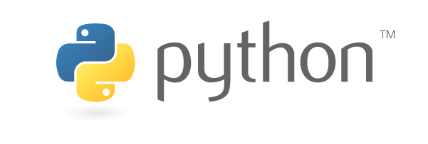
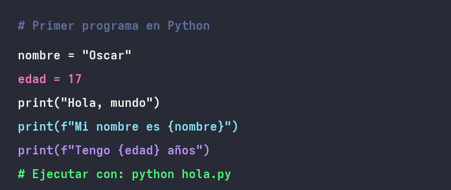
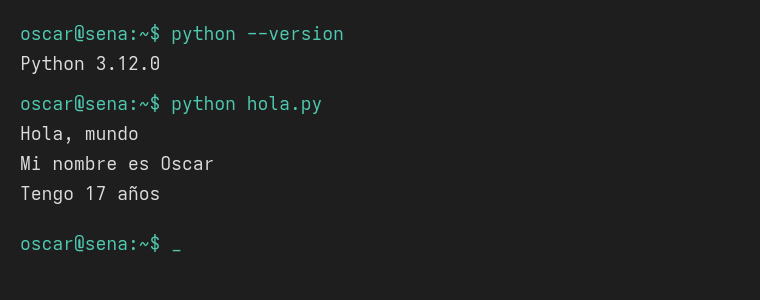
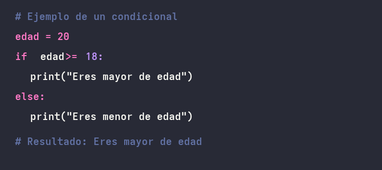

Guia hecha por Oscar Rojas y Santiago Diaz, aprendices
del SENA en el programa de Analisis y Desarrollo de Software (ADSO).
La idea de este
documento es que un aprendiz nuevo que nunca haya programado pueda entender de que se
trata Python, instalarlo en su computador y escribir su primer programa sin complicarse.
Importante: esta guia esta pensada para principiantes totales, por eso tratamos de explicar cada paso lo mas sencillo posible y usando palabras del dia a dia.

Python es un lenguaje de programacion creado en el año 1991 por Guido van Rossum. Hoy en dia es uno de los lenguajes mas populares del mundo porque es facil de leer, se parece mucho al ingles comun y se puede usar en muchas areas diferentes.
A diferencia de otros lenguajes como Java o C, Python no obliga a escribir tantas cosas extras para que un programa funcione. Por ejemplo, para imprimir un mensaje en la pantalla solo se necesita una linea de codigo. Esa es una de las razones por las que lo escogen mucho en los colegios, en las universidades y en el mismo SENA para empezar.
Python no es solo para hacer ejercicios de clase, en el mundo se usa para cosas muy diferentes. Algunos ejemplos son:
Antes de escribir el primer programa hay que preparar el computador. Esta parte es la que mas trabajo da al principio pero solo se hace una vez. Los pasos son los siguientes:
Hay que entrar a la pagina oficial de Python y descargar la version mas nueva. Es muy importante bajarlo desde la pagina oficial y no de otros sitios, porque pueden traer programas no deseados.
Descargar Python desde la pagina oficial
Al momento de instalar aparece una ventana. Aqui hay un detalle muy importante: hay que marcar la casilla que dice Add Python to PATH antes de darle a "Install Now". Si no se marca, despues la terminal no reconoce el comando python y toca reinstalar todo.
Un editor de codigo es el programa donde se escriben los archivos .py. El mas recomendado para principiantes es Visual Studio Code porque es gratis, pesa poco y tiene muchas ayudas. Es el mismo que usamos en el SENA.
Para saber si todo quedo bien, hay que abrir la terminal (en Windows se llama "cmd" o "PowerShell") y escribir el comando:
python --version
Si la terminal responde con algo parecido a Python 3.12.0 quiere decir que Python quedo instalado correctamente. Si en cambio dice que no reconoce el comando, lo mas seguro es que no se marco la casilla del Paso 2.
Ya con todo instalado se puede escribir el primer programa. Lo primero es abrir Visual Studio Code, crear una carpeta nueva en el escritorio y adentro crear un archivo llamado hola.py. La extension .py es la que le indica al computador que ese es un archivo de Python.
Dentro del archivo se escribe lo siguiente:

Luego se guarda el archivo y se abre la terminal dentro de Visual Studio Code (menu Terminal, opcion "Nueva terminal"). Para ejecutar el programa se escribe:
python hola.py
El resultado en la terminal se ve asi:

Si en la pantalla aparece el mensaje Hola, mundo junto con las otras lineas, quiere decir que ya programaste en Python. Felicitaciones, ese es el primer paso.
Una vez corre el primer programa, estos son los temas que conviene practicar en orden para ir aprendiendo poco a poco. No hay que apurarse, es mejor entender bien cada uno antes de pasar al siguiente.
Una variable es como una cajita donde se guarda un dato. Se le pone un nombre y adentro se mete un valor. Por ejemplo:
Despues se puede usar la variable en otras partes del programa sin tener que repetir el valor. Por ejemplo print(nombre) muestra en pantalla el texto Ana.
En Python los datos se dividen principalmente en:
| Tipo | Nombre en Python | Ejemplo |
|---|---|---|
| Texto | str | "Hola" |
| Numero entero | int | 17 |
| Numero decimal | float | 4.5 |
| Verdadero o falso | bool | True o False |
| Lista | list | [1, 2, 3] |
Los condicionales le permiten al programa tomar decisiones. Por ejemplo, si una persona tiene mas de 18 años se dice que es mayor de edad, y si no, es menor. En Python se escribe asi:

La palabra if significa "si" en ingles y la palabra else significa "si no". La combinacion elif es como un "o si no, pero si pasa otra cosa".
Los ciclos sirven para repetir una accion varias veces. En el SENA empezamos viendo el ciclo while, que repite mientras una condicion sea verdadera. Un ejemplo es:
Los ciclos son muy utiles cuando se tiene que hacer la misma tarea muchas veces, por ejemplo mostrar la tabla de multiplicar de un numero o pedirle al usuario que vuelva a intentar hasta que escriba un dato correcto.
Una funcion es un bloque de codigo con nombre que se puede reutilizar las veces que uno quiera. En vez de escribir las mismas lineas una y otra vez, se guardan dentro de una funcion y despues solo se llama por el nombre. Un ejemplo basico es:
def saludar(nombre):
print("Hola", nombre)
Y despues en el programa se llama con saludar("Oscar") y la pantalla muestra "Hola Oscar".
Es normal que al principio salgan errores. Son parte del aprendizaje. Estos son los que mas nos pasaron a nosotros cuando empezamos:
Para terminar les queremos dejar unos consejos que a nosotros nos han servido mucho en el SENA:
Para seguir aprendiendo por su cuenta, estos son algunos sitios recomendados: